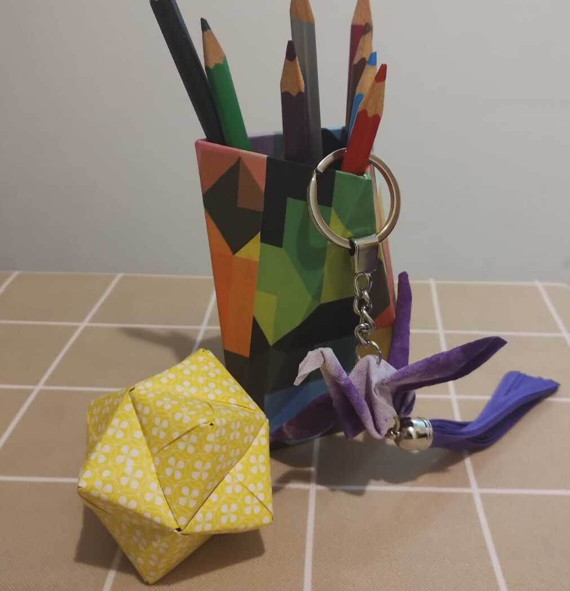

En Maravillosa, fusionamos de la riqueza cultural oriental, especialmente la japonesa, con la creatividad artesanal para ofrecer objetos funcionales y decorativos únicos.
Nuestra misión:
Es ser portadores de belleza y autenticidad, creando piezas que no solo adornan espacios, sino que también cuentan historias, conectando emocionalmente con nuestros clientes a través de sus gustos particulares.
Nuestra visión:
Es ser líderes en la creación de experiencias significativas y durareras, donde cada producto es una expresión de aprecio y conexión cultural.